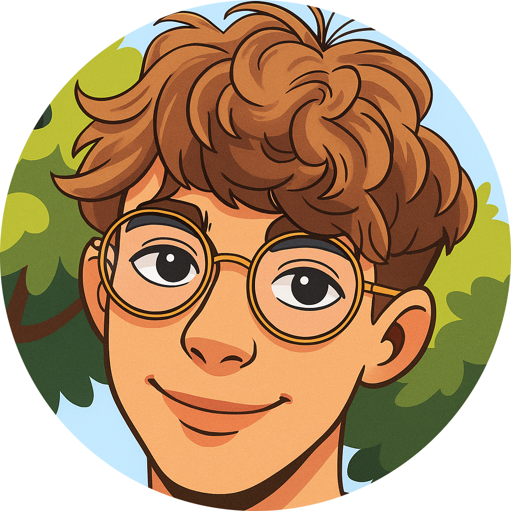

d
é
v
e
l
o
p
p
e
m
e
n
t
Depuis plus de cinq ans, je m’intéresse au développement. Ce domaine m’a toujours intrigué par sa capacité à transformer des idées en solutions concrètes. J’ai commencé en apprenant par moi-même, en testant, en me trompant, puis en progressant petit à petit. Cette passion s’est développée naturellement au fil du temps. Depuis environ deux ans, je consacre plus de temps à pratiquer et à approfondir mes connaissances. J’ai eu l’occasion de vivre une première expérience dans ce domaine, qui m’a permis de participer à des projets et d’appliquer mes compétences
Réalisation
FrameWork utilisé :
- TailWind
Développeur :
- Tom REGNIER
